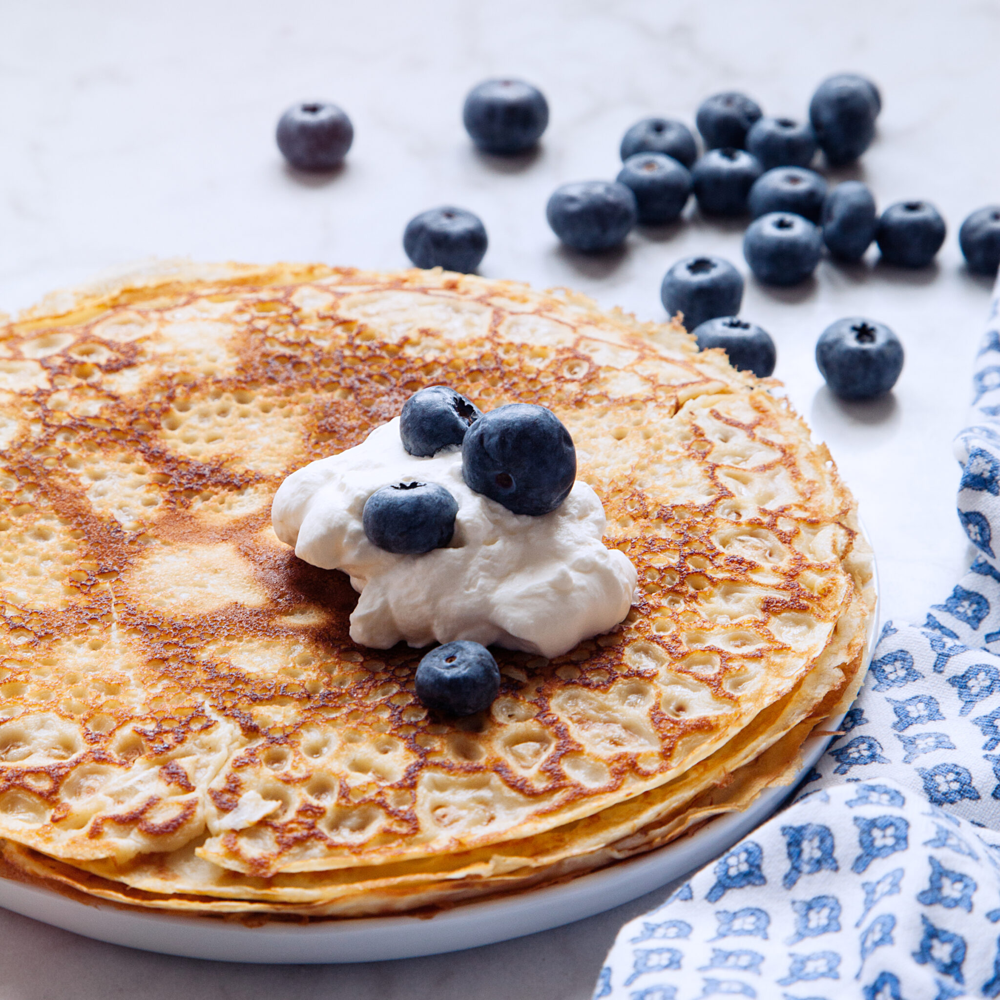

Pancake

Description
make traditional thin pancakes by mixing
flour, milk and eggs and a little salt
to a smooth batter.
Fry the batter into thin and tasty pancakes and serve with a sweet jam or savory side dishes.
Ingredients
- 2.5 dl Flour
- 1 pinch of salt
- 6 dl Milk
- 3 Eggs
- Butter (for frying)
- Jam, fruits or berries
Instructions
- Mix flour and salt in a bowl. Whisk in half the milk and whisk until smooth.
Whisk in the rest of the milk and eggs.
- Stek tunna pannkakor i lite smör, för varje pannkaka, i en stek- eller pannkakspanna.
-
Servera med sylt, bär eller frukt eller med salta tillbehör som Räksalsa med gurka och lime,
Rökt lax med dillkräm eller Avokadoröra med bacon och tomat.